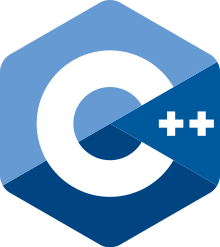

C언어
 C는 1972년 켄 톰슨과 데니스 리치가 벨 연구소에서 일할 당시
새로 개발된 유닉스 운영 체제에서 사용하기 위해 개발한 프로그래밍 언어이다. 데니스 리치가 B언어를 개선하면서 C언어가 탄생했다.
유닉스 시스템의 바탕 프로그램들은 모두 C로 작성되었고, 수많은 운영 체제의 커널 또한 C로 만들어졌다.
오늘날 많이 쓰이는 C++은 C에서 객체 지향성을 추가한 것이다.
C는 1972년 켄 톰슨과 데니스 리치가 벨 연구소에서 일할 당시
새로 개발된 유닉스 운영 체제에서 사용하기 위해 개발한 프로그래밍 언어이다. 데니스 리치가 B언어를 개선하면서 C언어가 탄생했다.
유닉스 시스템의 바탕 프로그램들은 모두 C로 작성되었고, 수많은 운영 체제의 커널 또한 C로 만들어졌다.
오늘날 많이 쓰이는 C++은 C에서 객체 지향성을 추가한 것이다.
이는 오늘날의 널리 쓰이는 거의 모든 운영 체제 커널이 C를 이용해 구현된 이유이기도 하다. 이처럼 C는 시스템 프로그램 개발에 매우 적합하지만, 응용 프로그램 개발에도 많이 쓰이기도 한다.
역사
C 언어의 초기 개발은 1969년부터 1973년까지 4년에 걸쳐 AT&T 벨 연구소에서 이루어 졌으며, 데니스 리치의 말에 따르면, 가장 창의적인 작업이 이루어진 기간은 1972년이었다. 언어의 이름이 'C'인 이유는 그 특징이 'B' 언어에서 유래되었기 때문이며, 켄 톰슨에 의하면, B 언어는 BCPL 언어의 기본만 남긴 버전이다.
리치와 톰슨에 의해 초기에 PDP-7의 어셈블리 언어로 구현되었던 유닉스 운영체제의 개발과 C 언어의 기원은 밀접하게 연관되어 있다. 결국 그들은 유닉스 운영체제를 PDP-11로 포팅하기로 결정하였다. PDP-11의 기능의 일부, 특히 바이트 접근기능을 활용하지 못하는 B 언어의 부족함이 C 언어의 초기 버전의 개발을 이끌었다.
유닉스의 초기 PDP-11 버전은 어셈블리로 개발되었다. 1973년에 struct 자료형의 추가로, C 언어는 유닉스의 대부분을 C로 쓸 수 있을 정도로 강력해 졌다. 유닉스는 어셈블리가 아닌 언어로 구현된 최초의 운영체제 커널 중의 하나였다.(더 빠른 사례는 PL/I로 쓰인 Multics 시스템, ALGOL로 쓰인 Burroughs B5000을 위한 MCP(Master Control Program)가 있다.) 1977년 경, 리치와 스티븐 C. 존슨이 유닉스 운영체제의 이식성을 향상시키기 위해, C 언어를 추가적으로 변경하였다. 존슨의 Portable C Compiler는 새로운 플랫폼에서의 C의 구현의 기초가 되었다.
C++
 C++는 AT&T 벨 연구소의 비야네 스트롭스트룹이 C언어 기반으로 1983년 발표하여 발전한 프로그래밍 언어이다.
C 언어에 객체지향 프로그래밍을 지원하기 위한 내용이 덧붙여진 것이라고 할 수도 있지만, 애초부터 객체지향을 염두에 두고 만들어진 언어와는 다르게, 단지 더 좋은 C 언어로서 수속형 언어로 취급하기도 한다. 초기의 C++은 C 위에 놓인 트랜스레이터로 구현되었다. 즉, C++ 프로그램을 일단 C 프로그램으로 변환하고 나서 C 컴파일러로 컴파일하는 식이었고 따라서 C 언어에 대해 상위 호환성을 갖는 언어였다.
그 후, C 언어의 표준 규격이 바뀔 때 const 수식 등 C++의 기능이 C 언어에 받아들이기도 했다. 현재 C 언어와 C++와의 사이에는 엄격한 호환성은 없다. 특히 C99의 출현으로 C 언어와의 호환성은 깨져 버렸다. 따라서 C99 이후로 C++은 C의 수퍼셋(superset)이 아니다. 그러나, C++17 표준안에서는 다시 C언어가 C++의 진부분집합이 될 것이 확실해 보인다.